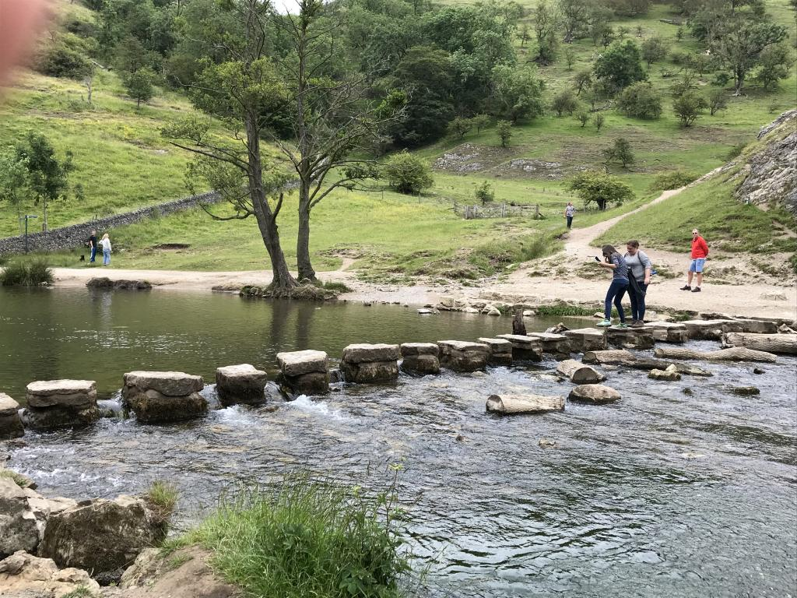

12.2 Nove passos para um ensino de qualidade na era digital



Na seção anterior, salientei que existem excelentes padrões de garantia de qualidade, organizações e investigações disponíveis on-line, pelo que não procederei à sua reprodução. Em alternativa, proponho um conjunto de passos práticos para a implementação efetiva destes parâmetros.
12.2.1 Uma alternativa à utilização do modelo ADDIE para assegurar a qualidade
Assumo que os procedimentos institucionais regulamentares para homologação de novos cursos foram cumpridos, embora se revele pertinente ponderar os nove passos descritos abaixo antes de submeter uma proposta final para uma nova disciplina ou curso presencial, híbrido ou on-line. Esta metodologia aplica-se igualmente a processos de redesenho de disciplinas existentes.
A prática padrão de garantia de qualidade no desenho de um curso totalmente on-line assenta na adoção de uma abordagem de base sistémica, recorrendo a modelos como o ADDIE (ver Capítulo 6, Seção 6.5). Puzziferro e Shelton (2008) analisam um exemplo prático consolidado.
Contudo, abordamos já as limitações de uma metodologia puramente sistémica no cenário dinâmico, incerto e complexo da era digital (Capítulo 6, Seção 6.10). Revela-se necessário dispor de uma metodologia aplicável não apenas ao on-line puro, mas a dinâmicas presenciais, híbridas e mistas. Deste modo, visa-se uma abordagem ao design instrucional flexível mas sistemática, com amplitude para integrar diferentes modalidades letivas. Para contextualizar a distinção face aos modelos sistêmicos tradicionais, note-se que a aplicação do modelo ADDIE se iniciaria apenas a partir do Passo 6 deste referencial.
Adicionalmente, não basta focar na docência em si; cumpre estruturar o ecossistema ou ambiente de aprendizagem no qual o estudo se desenvolverá (ver Capítulo 6). Para estruturar este enquadramento de qualidade, sugerem-se nove passos que, embora de pendor paralelo na sua implementação prática, observam uma lógica sequencial de apresentação:
- Passo 1: Definir como pretende ensinar
- Passo 2: Escolher a modalidade de ensino
- Passo 3: Trabalhar em equipe
- Passo 4: Mobilizar recursos existentes
- Passo 5: Dominar a tecnologia
- Passo 6: Definir objetivos de aprendizagem adequados
- Passo 7: Desenhar a estrutura e as atividades letivas
- Passo 8: Comunicar de forma contínua
- Passo 9: Avaliar e inovar
Estes passos mobilizam conteúdos analisados nos capítulos precedentes deste livro. Caso o leitor tenha realizado as atividades propostas ao longo da obra, disporá de elementos para responder às questões levantadas em cada etapa.
Referência
Puzziferro, M., & Shelton, K. (2008). A model for developing high-quality online courses: Integrating a systems approach with learning theory Journal of Asynchronous Learning Networks, Vol. 12, Nos. 3-4